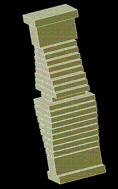

Typical Performance for a Ku-Band Filter
Advantages over Ridged Evanescent-Mode Filter
Advantages over Waffle-Iron Filter
Advantages over Conventional Corrugated Filter
|
 |
Design Tips
|
| SPEC | Insertion Loss | TE10-mode | TE20-mode | TE30-mode | TE40-mode | Related Links |
Table 1: Summarized Performance
| PARAMETER | PERFORMANCE | NOTES |
| Pass-Band, GHz | 12.0 - 13.0 | |
| Insertion Loss, dB | 0.11 | Silver plated, Ambient, 28 dB RL |
| Return Loss, dB (VSWR) | 28 (1:1.08) 24 (1:1.14) 21 (1:1.20) | EDM Milling +/-0.0005'', R0.032'' Milling +/-0.001'', R 0.064'' |
| Rejection, dB | See Plots | Spurious modes taken into account |
| Peak Power Handling, W In Space (multipaction) On Ground (air breakdown) | 10000 150000 | By analysis (0.12'' minimum gap) |
| Size, inches | 1.5 x 1.5 (WR75 Flange) x 4.0 (Length) | Space for flanges included |
| Mass, g | 90 | Aluminum |
| Production method | Milling or EDM preferred Die casting possible | See tolerances above |

Figure 1: Insertion loss response: transmission (dB) versus frequency (GHz)

Figure 2: TE10-mode response: reflection and transmission (dB) versus frequency(GHz)

Figure 3: TE20-mode (first spurious mode) response: reflection and transmission (dB) versus frequency (GHz)

Figure 4: TE30-mode (second spurious mode) response: reflection and transmission (dB) versus frequency (GHz)

Figure 5: TE40-mode (third spurious mode) response: reflection and transmission (dB) versus frequency (GHz)